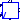
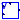

Excitation system models (Automatic Voltage Regulators - AVR) from PSAT
Extends from Modelica.Icons.Package (Icon for standard packages).
| Name | Description |
|---|---|
|  AVRTypeI | PSAT AVR Type 1 |
| AVRTypeII | PSAT AVR Type 2 |
|  AVRtypeIII | PSAT AVR Type 3 |
PSAT AVR Type 1
The PSAT Toolbox called this model "AVR Type I" (see [Milano2013], section 18.3.1) when it actually is the "IEEE Type II" (see [Milano2010], chapter 16.2.2).
| Name | Description |
|---|---|
| vrmax | Maximum regulator voltage [1] |
| vrmin | Minimum regulator voltage [1] |
| K0 | Regulator gain, [pu/pu] |
| T1 | First pole [s] |
| T2 | First zero [s] |
| T3 | Second pole [s] |
| T4 | Second pole [s] |
| Te | Field circuit time constant [s] |
| Tr | Measurement time constant [s] |
| Ae | 1st ceiling coefficient |
| Be | 2nd ceiling coefficient |
| v0 | Initialization [1] |
| Name | Description |
|---|---|
| v | Generator termminal voltage [pu] |
| vf | Field voltage [pu] |
| vref | Reference generator terminal voltage [pu] |
| vref0 | Voltage reference at t=0 [pu] |
| vf0 | Reference generator terminal voltage [pu] |
PSAT AVR Type 2
The PSAT Toolbox called this model "AVR Type II" (see [Milano2013], section 18.3.2) when it actually is the "IEEE Type I" (see [Milano2010], chapter 16.2.1).
| Name | Description |
|---|---|
| vrmin | Minimum regulator voltage [1] |
| vrmax | Maximum regulator voltage [1] |
| Ka | Amplifier gain [pu/pu] |
| Ta | Amplifier time constant [s] |
| Kf | Stabilizer gain [pu/pu] |
| Tf | Stabilizer time constant [s] |
| Ke | Field circuit integral deviation [pu/pu] |
| Te | Field circuit time constant [s] |
| Tr | Measurement time constant [s] |
| Ae | 1st ceiling coefficient |
| Be | 2nd ceiling coefficient |
| v0 | Initial measured voltage [1] |
| Name | Description |
|---|---|
| v | Generator terminal voltage [pu] |
| vf | Field voltage [pu] |
| vref | Reference generator terminal voltage [pu] |
| vref0 | Voltage reference at t=0 [pu] |
| vf0 | Reference generator terminal voltage [pu] |
PSAT AVR Type 3
See also [Milano2013], section 18.3.3 or [Milano2010], chapter 16.2.3.
| Name | Description |
|---|---|
| vfmax | [1] |
| vfmin | [1] |
| K0 | regulator gain [1] |
| T2 | regulator pole [s] |
| T1 | Regulator zero [s] |
| Te | Field circuit time constant [s] |
| Tr | Measurement time constant [s] |
| Name | Description |
|---|---|
| v | |
| vf | |
| vs | |
| vf0 |